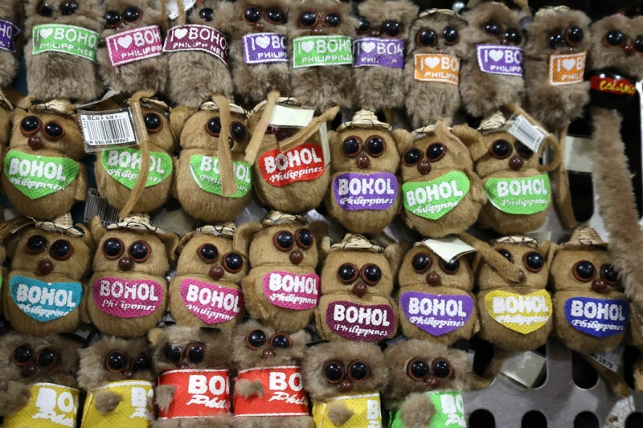
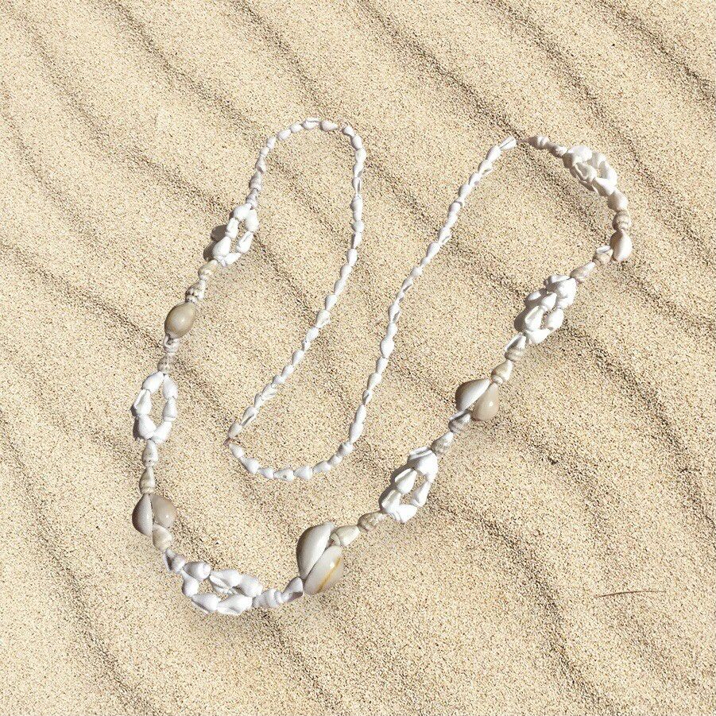
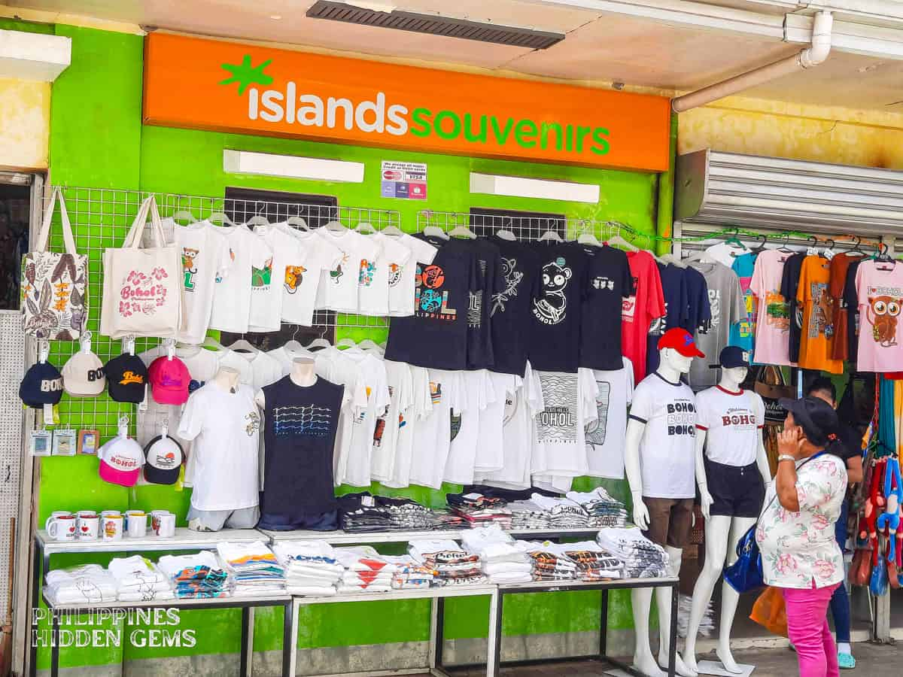
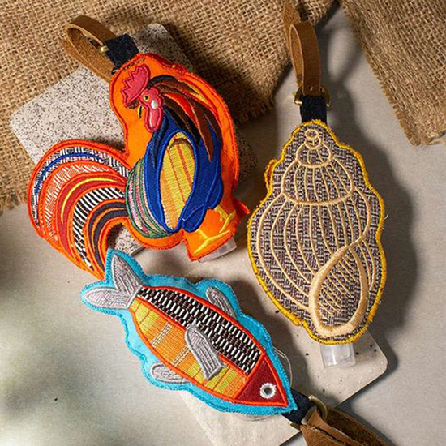
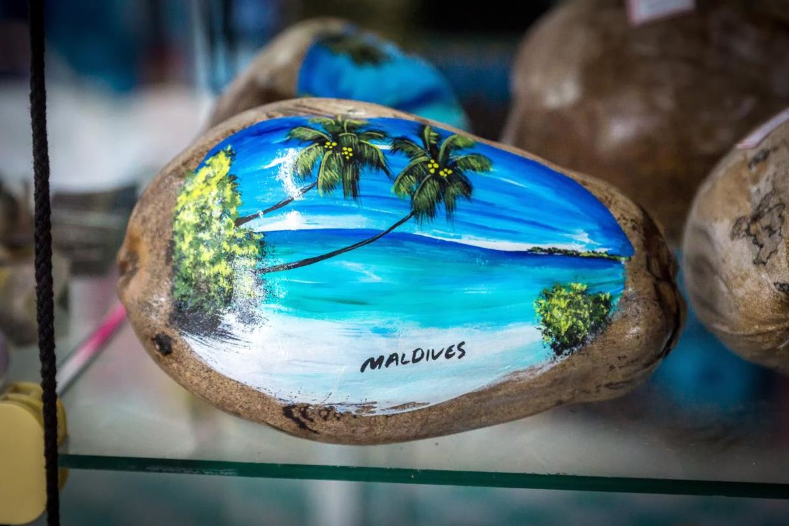
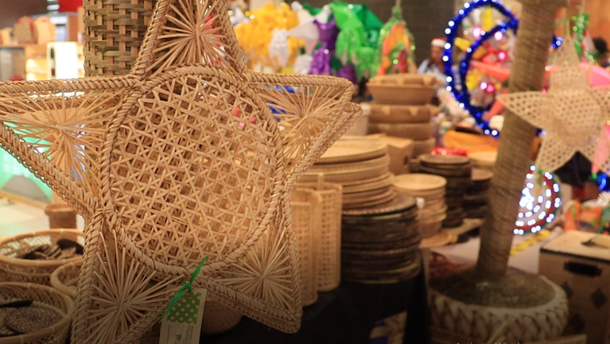

Treasures of Bohol
Treasures of Bohol
Treasures of Bohol
Treasures of Bohol
Take home a piece of Bohol with our unique souvenirs that capture the
spirit, culture, and natural beauty of our beloved island.

Handcrafted miniature tarsier made from local materials. The Philippine tarsier is a symbol of Bohol and represents our commitment to wildlife conservation.
⚠ Learn More
Beautiful jewelry made from polished local seashells. Each piece celebrates Bohol's rich marine biodiversity and coastal heritage. Handcrafted by local artisans.
⚠ Learn More
Various items featuring the iconic Chocolate Hills landscape. These geological wonders are a UNESCO World Heritage Site candidate and Bohol's most famous landmark.
⚠ Learn More
Colorful handwoven accessories with traditional Boholano patterns. These items showcase the vibrant colors and geometric designs unique to local weaving traditions.
⚠ Learn More
Hand-painted coconut shells featuring traditional Filipino motifs. These pieces blend natural materials with artistic expression, creating unique decorative items.
⚠ Learn More
Apparel featuring artistic Bohol-themed designs. These items help spread awareness about Bohol's culture and natural beauty while supporting local artists.
⚠ Learn MoreOur souvenirs are more than just mementos - they're tangible connections to Bohol's rich culture and natural wonders. Each item is thoughtfully created by local artists who pour their hearts into crafting meaningful representations of what makes Bohol special. These souvenirs serve as cultural ambassadors, sharing the story of our island with the world. They help sustain local families, preserve traditional craft-making, and raise awareness about Bohol's unique biodiversity and geological treasures for future generations.